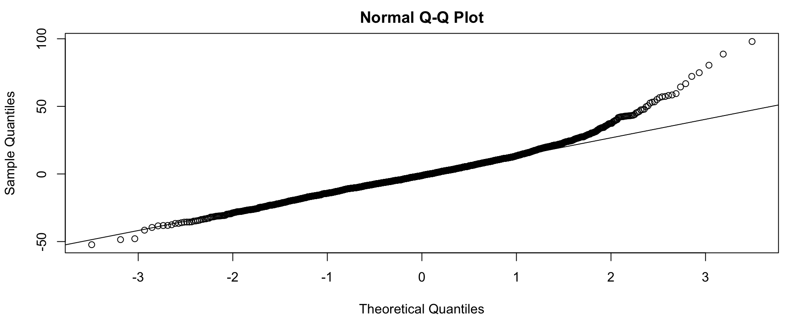
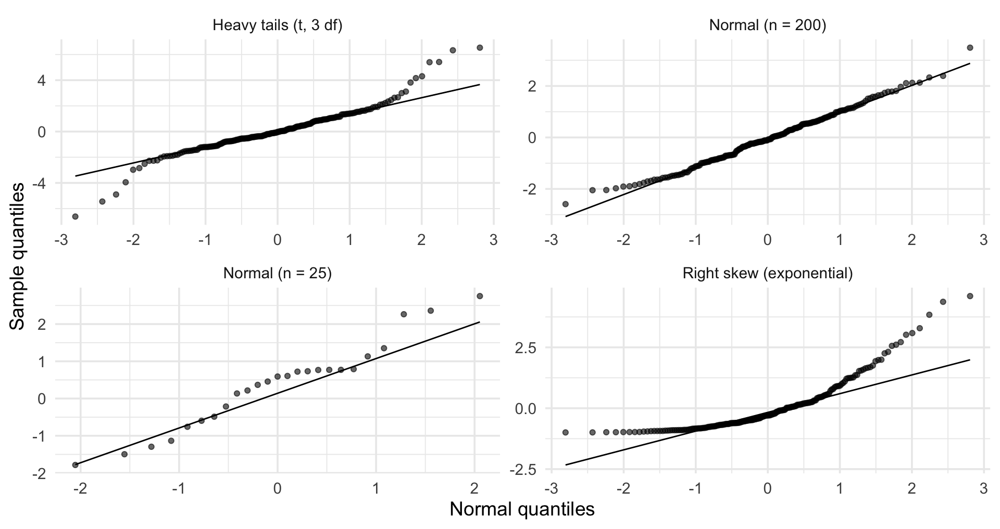
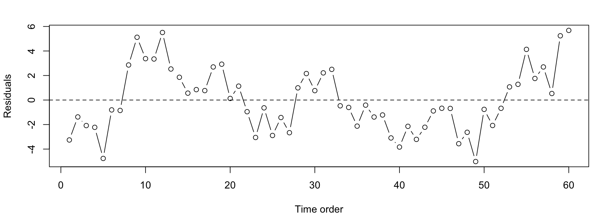

Regression I: Linear Regression with Modeling (GPH-GU 2353/3353)
2026-10-20
One county (or country) can move your whole model.
To check normality, compare the sorted residuals to where sorted values should fall if they were normal.
Four simulated samples; I wrote the generator, so the diagnosis is certain.
set.seed(701)
qq_data <- bind_rows(
tibble(panel = "Normal (n = 200)", z = rnorm(200)),
tibble(panel = "Heavy tails (t, 3 df)", z = rt(200, df = 3)),
tibble(panel = "Right skew (exponential)", z = rexp(200) - 1),
tibble(panel = "Normal (n = 25)", z = rnorm(25))
)
qq_plot <- ggplot(qq_data, aes(sample = z)) +
geom_qq(alpha = 0.6) + geom_qq_line() +
facet_wrap(~panel, scales = "free") +
labs(x = "Normal quantiles", y = "Sample quantiles")
Shapiro-Wilk normality test
data: resid(fit_bp)
W = 0.96701, p-value < 2.2e-16 big_n_p small_n_p
5.205110e-07 1.412366e-01 | Situation | How much normality matters |
|---|---|
| Prediction intervals (any n) | A lot: PIs use the error tails |
| CIs and t tests, small n | Considerably |
| CIs and t tests, large n | Barely: the CLT rescues \hat\beta |
| Point estimates | Not at all for unbiasedness |
Assumption 3: knowing one error tells you nothing about another. Violated by time order (this month resembles last month), clusters (counties in the same state), repeated measures (same person twice).

lag Autocorrelation D-W Statistic p-value
1 0.6658386 0.561717 0
Alternative hypothesis: rho != 0A colleague fits a model on 3,000 patients, runs shapiro.test(), gets p <
10^{-10}, and declares the regression invalid.
Open Week 7 Lab, Part A: a guided walkthrough of a classic dataset, savings from the faraway package: savings rates for 50 countries.
GPH-GU 2353 · Week 7A